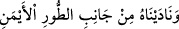
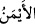
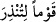
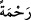
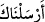
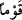

“zaman da sen Tûr” Dağı’nın “yanında değildin.”
Kasdedilen, Tûr Dağı’nın sağ tarafıdır. Nitekim Allah Teâlâ başka bir âyette şöyle
buyurmuştur: “__WORD__ (O’na Tûr’un sağ tarafından seslendik)”
(Meryem, 19/52). Yukarıdaki âyette ise Rasûlullah (s.a.)’e bir zemm (kötüleme)
vehminden sakınmak için “__WORD__ (sağ tarafı)” ifâdesini Allah Teâlâ zikretmemiştir; zira
Peygamberimiz (s.a.) ezelden ebede kadar dâimâ sağ tarafta olmaya devam
edegelmiştir. Şüphesiz bu ifâdede, bizzat Allah tarafından Peygamberimiz (s.a.)’e bir
ikrâm ve bir nezaket vardır.
“Bilakis, senden önce kendilerine uyarıcı (peygamber) gelmeyen bir kavmi
uyarman için Rabbinden” sana ve insanlara “bir rahmet olarak (orada geçenleri sana
bildirdik);”
“__WORD__ ifâdesindeki “__WORD__”, “__WORD__ ile muallel olan (__WORD__) fiiline müteallik olup
göndermenin sebep ve illetini beyan eder.
“__WORD__ (senden önce kendilerine uyarıcı (peygamber) gelmeyen)”
cümlesi, “__WORD__ kelimesinin sıfatıdır. Yani, seninle Îsâ (a.s.) arasındaki fetret dönemine
rastlamaları sebebiyle kendilerine bir uyarıcı gelmeyen bir kavme, topluluğa demektir.
Bu fetret dönemi beş yüz elli senedir. Yahud da seninle İsmâil (a.s.) arasında peygamber
gelmeyen bir kavme demektir. Zira Mûsâ ve Îsâ (a.s.)’ın dâveti, İsrâiloğullarına has idi.
“Ola ki düşünüp öğüt alırlar.” Yâni senin uyarmanla vaaz ve nasihatı kabul ederler.
Kıssanın tertibi; Mûsâ’ya emrin verilişi, Medyen halkı arasında kalışı ve ona Allah
Teâlâ tarafından nidâ edilişi şeklinde değiştirilmesi, bunların her birinin müstakil bir
delil oluşundan dolayıdır; Peygamber (s.a.) bunları ilâhi vahiyle haber vermiştir. Şâyet
kıssanın vukû tertibine uyularak önce Peygamberimiz’in (s.a.) Medyen halkı arasında
ikamet etmeyişi, sonra Mûsâ’ya emrin verildiğinde hâdiseye hazır olmayışı
zikredilseydi, bunların hepsinin sadece bir delil olduğu zannedilebilirdi. Nitekim
İrşâd’da böyle denilmiştir.
Sonra hatırlatılması gereken şeylerden biri de ezelî ahdin yenilenmesidir. Bu da, her
iki âlem için kurtuluş sebebi olan kelime-i tevhîd ile olur. Hadiste buyrulmuştur ki:
“Allah Teâlâ, mahlûkatı yaratmadan iki bin yıl önce as (mersin) ağacının yaprağına
bir kitap yazdı. Sonra onu arşın altına koydu. Sonra şöyle nidâ etti: Ey Ümmet-i
Muhammed, rahmetim gazabımı geçti. Size, benden istemeden önce verdim, bana
istiğfar etmeden önce sizi affettim. Sizden her kim “Allah’dan başka ilâh olmadığına,
Muhammed’in benim kulum ve Rasûlüm olduğuna şehâdet ederek bana kavuşursa;
onu cennete koyarım. Allah, Mûsâ’dan “benim Allah’ın Rasûlü olduğuma îman
ettiğine” dair benim gıyabımda ahid almıştır.”[112]
Yine hadiste buyrulmuştur ki: “Mûsâ (a.s.) bir gün yolda yürüyordu. Cebbâr (olan
Allah) ona “Ey Mûsâ!” diye nidâ etti. Mûsâ (a.s.) sağına ve soluna bakındı; kimseyi
göremedi. Sonra ikinci defa: “Ey Mûsâ!” diye nidâ olundu. Mûsâ (a.s.) yine kimseyi